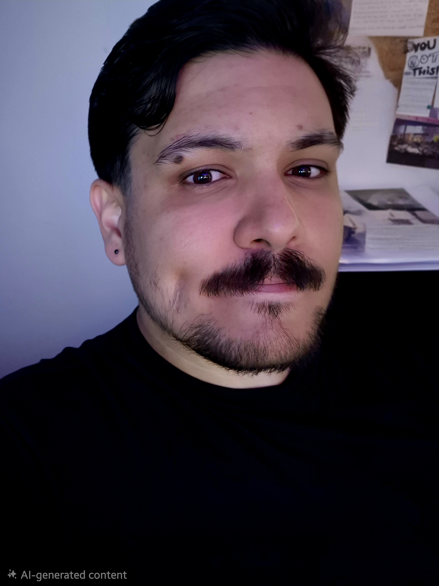
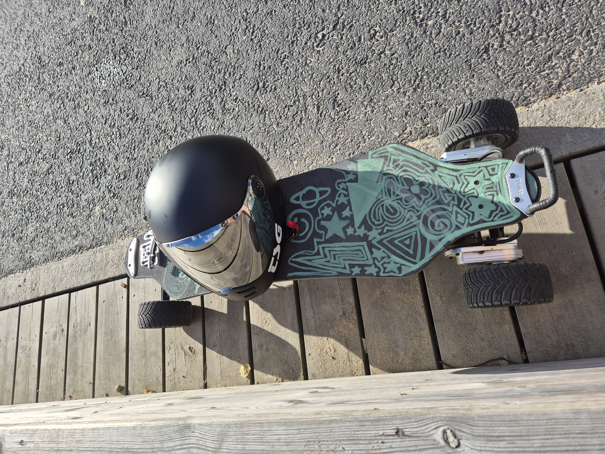
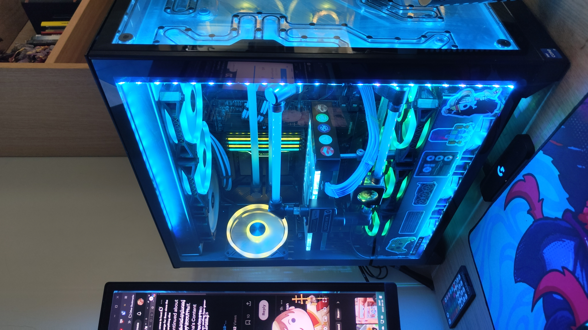
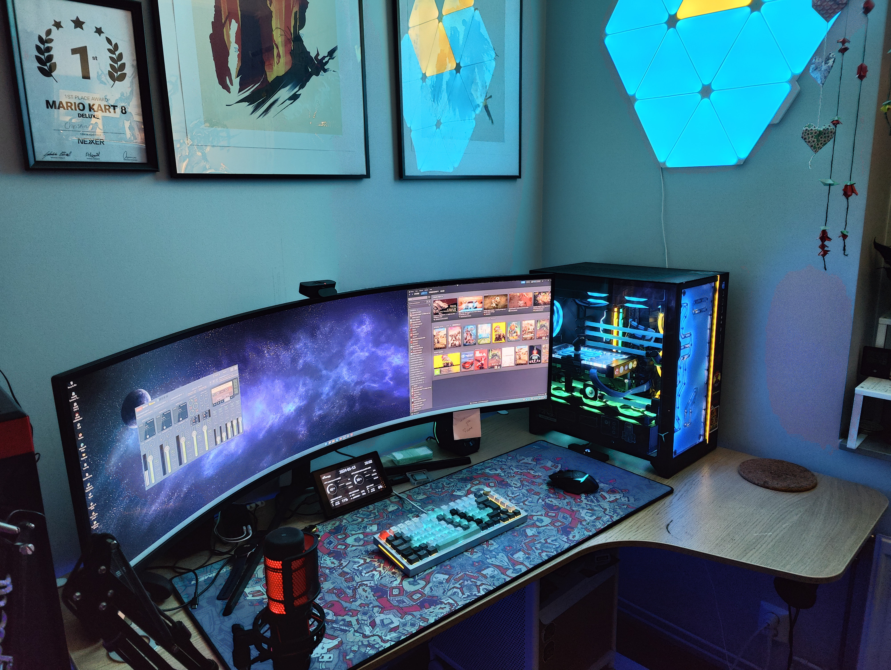
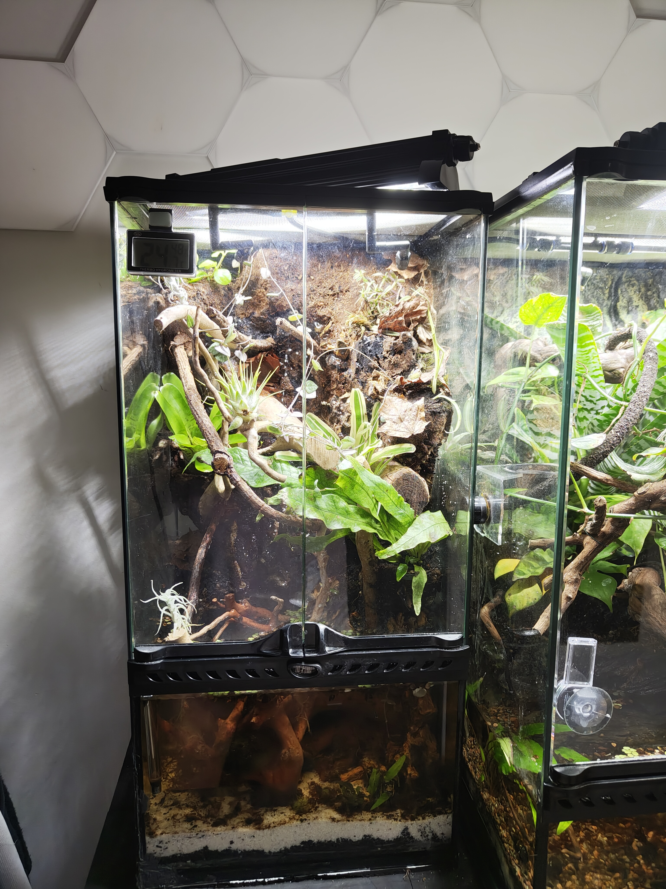
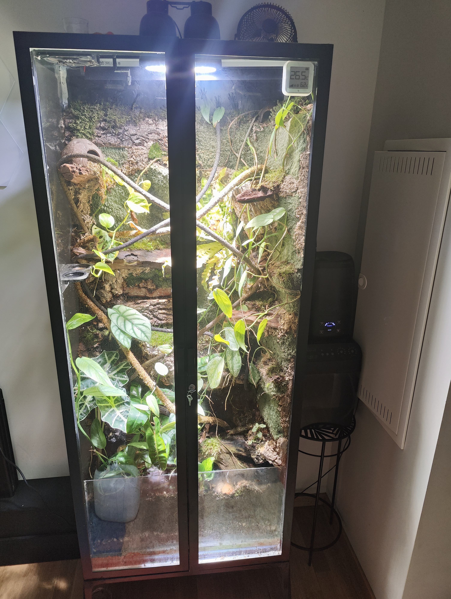
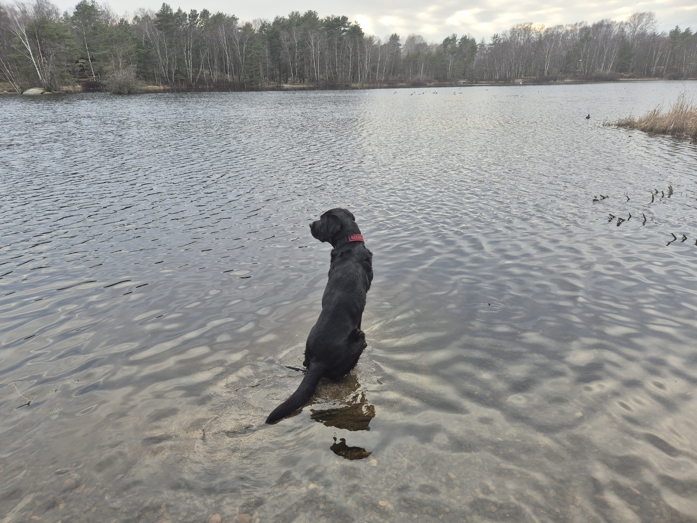
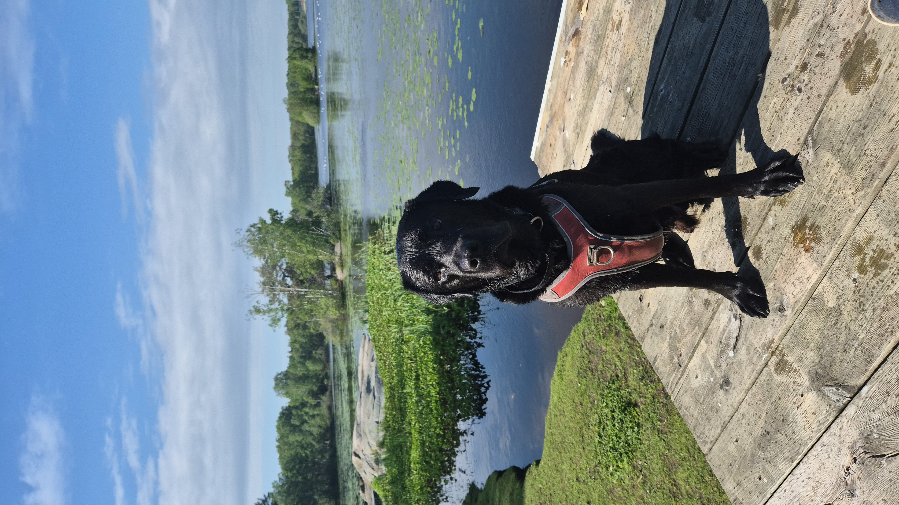

Hey, I'm Christian.
A full-stack developer from Cuba, based in Göteborg, Sweden since 2011. Close to seven years of professional experience, and a habit of building and operating real things on my own time, not just at work.
What I actually do
I studied front-end development at Medieinstitutet in Gothenburg, and started working professionally in 2018 alongside my studies, on small WordPress sites. Since then I've worked across both ends of the industry: product companies building one thing for years (Enginio, a Vue.js platform for advertising campaigns, from its early startup days through acquisition by Nordic Retail Group), and consultancies moving between several clients at once, most recently Dear Friends and Nexer AB, working with clients like PostNord, Nordic Wellness, and Inera (the 1177 healthcare platform).
I work across the stack: React, Vue, and Angular on the frontend, Node, .NET, and PHP on the backend, React Native for mobile, plus Umbraco and WordPress for content-driven sites. The project I'm proudest of from that consulting work is a React Native app I built solo for Göteborgs Stadsmission, connecting people donating surplus food with people who need it across the city. On the frontend I care about design and UX as much as I care about how things work underneath.
My first real production codebase was an internship at Plejd, a Swedish smart-home company, working in a 100,000+ line Angular.js/Vue.js application used by 50+ employees daily. I still think about that codebase whenever I'm deciding how much structure a new project actually needs.
Where the rest of this portfolio comes from
The two projects on the home page, Turbo and casa-verde, aren't side projects in the "unfinished repo" sense. Turbo is an Android app that talks directly to an electric skateboard over Bluetooth and a backend that models its physics to estimate range; casa-verde is a home lab of about ten containers that I run, monitor, and document like it's someone's job to keep it up, because for a few hours a week it is.
I keep a written decision log for casa-verde: more than 80 short documents, each one explaining why a particular call was made, including the couple of times I had to revert something that made things worse. That habit, writing down the reasoning and not just the result, is the same one I bring to code review and architecture discussions at work.
I've also spent time running local LLMs (Ollama) for a home voice assistant, mostly to understand where they're actually reliable versus where they confidently make things up, a distinction that turned out to matter a lot once it was controlling real devices in my house.
A few things worth knowing
Ownership
I follow a problem from requirements through to what happens once it's in production, including the parts that are inconvenient to own.
Learns fast, checks assumptions
New framework, new protocol, new domain: I get productive quickly because I go after the fundamentals first, not just the API surface.
Writes things down
Decisions, trade-offs, and failures get documented, not just remembered. It's cheaper for the next person, including future me.
Genuinely self-driven
I code most days outside of work and run my own production infrastructure, not because it's expected, but because I like building things that work.
The rest of it
An electric skateboard called Turbo
The board that started all of it: a Tynee Ultra X Pro. I named it Turbo myself, in memory of Oliver Tree: his first stage character, back when he was still an unknown street performer, was called Turbo. Wanting to actually understand my rides instead of trusting a laggy cloud app turned into a full Android app and backend, and the board's own nickname was the obvious name for it too.



Building PCs and keyboards
I've been building custom computers since I was a kid, and it's stayed a real hobby rather than turned into a chore. Current build: an RTX 4090 on a custom water loop, an i7-13700K, 64GB of DDR5, and a 49" ultrawide, plus a couple of mechanical keyboards built from the switches up, QMK firmware included.
Terrariums and paludariums
Building small land-and-water ecosystems from scratch: glass, drainage, misting, the works. I automate lighting and watering with Home Assistant on a Raspberry Pi, which turned out to be a good lesson in its own right: a stable ecosystem, like stable software, needs the fundamentals right before anything else matters.




Riki
My Labrador, with me since he was three months old. Good at knowing when I've been staring at a screen too long, and right, more often than not, that a walk solves a problem faster than another hour at the desk.